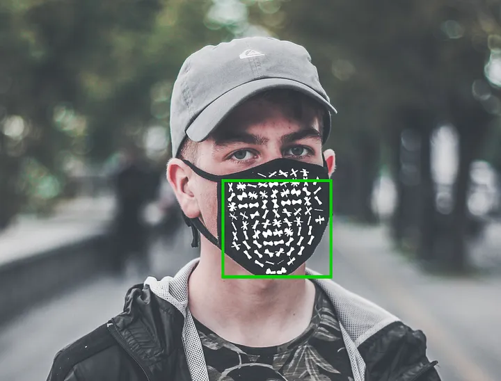
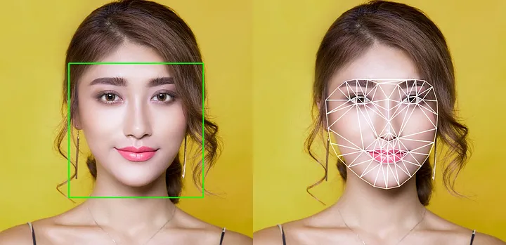
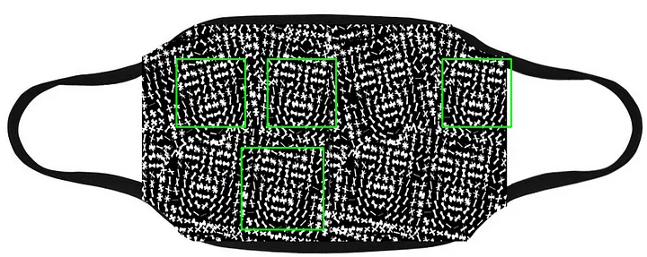

This is a re-post of a blog I wrote for Medium in 2019. Facial detection has evolved a lot since that time, so the information here may be out of date.

Accompanying GitHub repository: https://github.com/BruceMacD/Adversarial-FacesUsage of facial recognition is on the rise. With the recent debates over the ethics of facial recognition potential adversarial attacks against facial detection have been on my mind. Facial recognition is being used everywhere from airports to social media. It seems to be near impossible to opt-out of having your face scanned.
An ideal attack on facial detection would be an article of clothing that looks inconspicuous to the uninformed. With inspiration from the Hyperface project I decided to research and implement a wearable adversarial example. In this article I'll detail the process of creating an adversarial image to fool a selected type of facial detection and how I implemented a practical example on a face mask.
Facial Detection vs. Facial Recognition

The first thing it's important to note before delving deeper into this project is the difference between facial detection and facial recognition. Facial detection refers to the ability to detect when a face is present in an image. Facial recognition relies on facial detection to establish a face is present in an image but it goes one step further and attempts to establish whose face it is.
For this project I have chosen to focus on facial detection. Mainly for the reason that it is much easier to test. To properly test facial recognition access to a facial recognition database would be ideal.
Facial Detection Models
import dlib
import cv2
cv2.imread("path/to/input_img.png")
frontal_face_detector = dlib.get_frontal_face_detector()
upscaling_factor = 1
detected_faces = frontal_face_detector(img, upscaling_factor)Testing the Design on a Mask

With the final design completed I created some mock mask designs to test how they were evaluated by the HOG facial detection. Initial results seemed promising. The above design consistently returned 4–5 falsely detected faces.